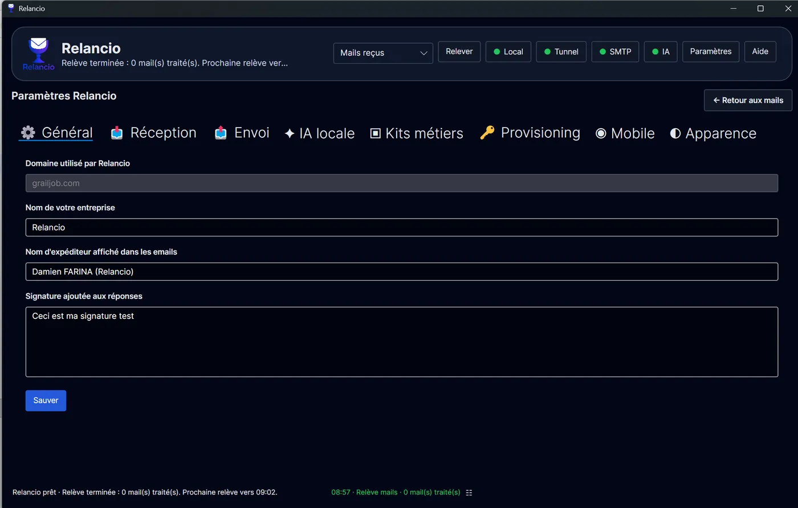

Status indicators
The Local, Tunnel, SMTP and AI indicators give a quick overview of useful services. They help with diagnosis without replacing the settings pages.
Relancio
Recommended steps to configure Relancio in the right order.
No email is sent automatically. The Send button always corresponds to an explicit user action.
The Local, Tunnel, SMTP and AI indicators give a quick overview of useful services. They help with diagnosis without replacing the settings pages.
For better security and clarity, ideally configure a technical mailbox dedicated to Relancio.
